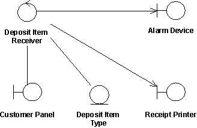

| Guideline: Use-Cases Realizations |
 |
|
| Related Elements |
|---|
A use-case realization represents how a use case will be implemented in terms of collaborating objects. The realizations reside within the design. By walking through a design exercise of showing how the design elements will perform the use case, the team gets confirmation that the design is robust enough to perform the required behavior. The realization can take various forms. It may include, for example, a textual description (a document), class diagrams of participating classes and subsystems, and interaction diagrams (communication and sequence diagrams) that illustrate the flow of interactions between class and subsystem instances. The reason for separating the use-case realization from its use case is that doing so allows the requirements, in the form of use cases, to be managed separately from the design, in the form of realizations. This decoupling will prove invaluable if the architecture is changed enough that the realization needs to be reworked while the requirements remain unaffected. Even without such a circumstance, the clear separation of concerns between requirements and design is valuable. In a model, a use-case realization is represented as a UML (Unified Modeling Language) collaboration that groups the diagrams and other information (such as textual descriptions) that form the use-case realization. Like other aspects of the design, the UML diagrams that support use-case realizations can be produced at various levels of abstraction. A first pass in creating the realization might produce a diagram at an analysis level of abstraction where the participants will be high-level elements that are expected to be revisited and detailed down to the design level in a second pass. If the architecture and design idioms are well-understood, the realization could immediately be created at a low level of abstraction that specifies more detail on the elements and how they will collaborate to realize the behavior of the use case. In the latter case, it is valuable to model patterns and architectural mechanisms to reduce the amount of low-level detail in each realization. For each use case in the requirements, there can be a use-case realization in the design with a realization relationship to the use case, as the following figure shows. In UML, this is shown as a dashed arrow with an arrowhead, like a generalization relationship, indicating that a realization is a kind of inheritance, as well as a dependency (see the figure that follows). The UML notation for use-case realization
Class diagrams owned by a use case realizationFor each use-case realization, there may be one or more class diagrams that depict its participating classes. A class and its objects often participate in several use-case realizations. While designing, it is important to coordinate all of the requirements related to a class that different use-case realizations may have. The figure below shows an analysis class diagram for the realization of the Receive Deposit Item use case. Notice the use of boundary-control-entity stereotypes to represent analysis classes (see Guideline: Entity-Control-Boundary Pattern).The use case Receive Deposit Item and its analysis-level class diagram  Sequence and communication diagramsFor each use-case realization, there can be one or more interaction diagrams that depict the participating objects and their interactions. There are two types of interaction diagrams: sequence diagrams and communication diagrams. They express similar information, but show it in different ways.
Realizing use cases through interaction diagrams helps to keep the design simple and cohesive. Assigning responsibilities to classes on the basis of what the use-case scenario explicitly requires encourages the design to contain the following elements:
These factors help improve the overall quality of the system. |

| Guidelines |
|---|
This program and the accompanying materials are made available under the |